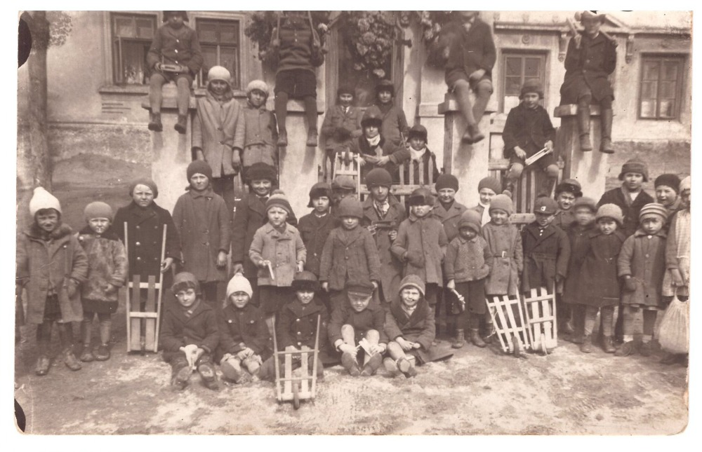
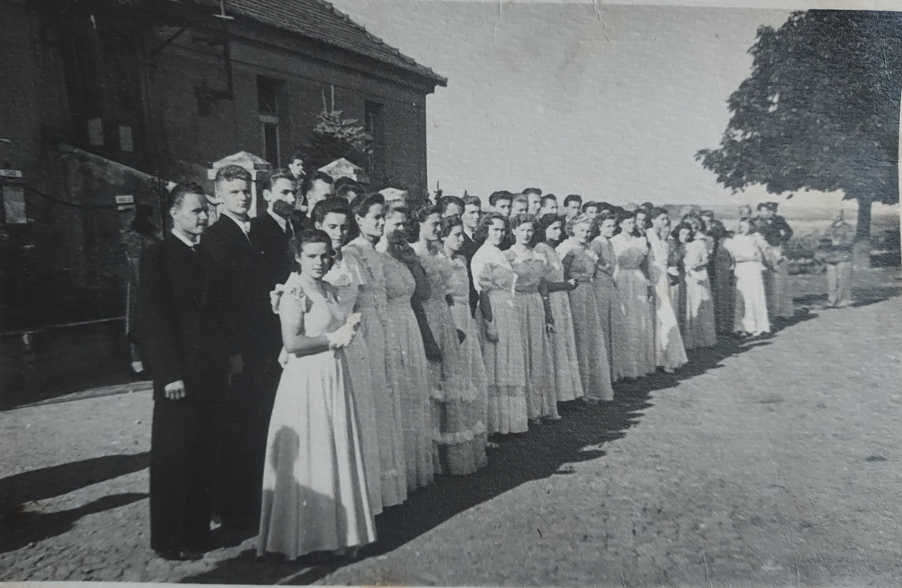
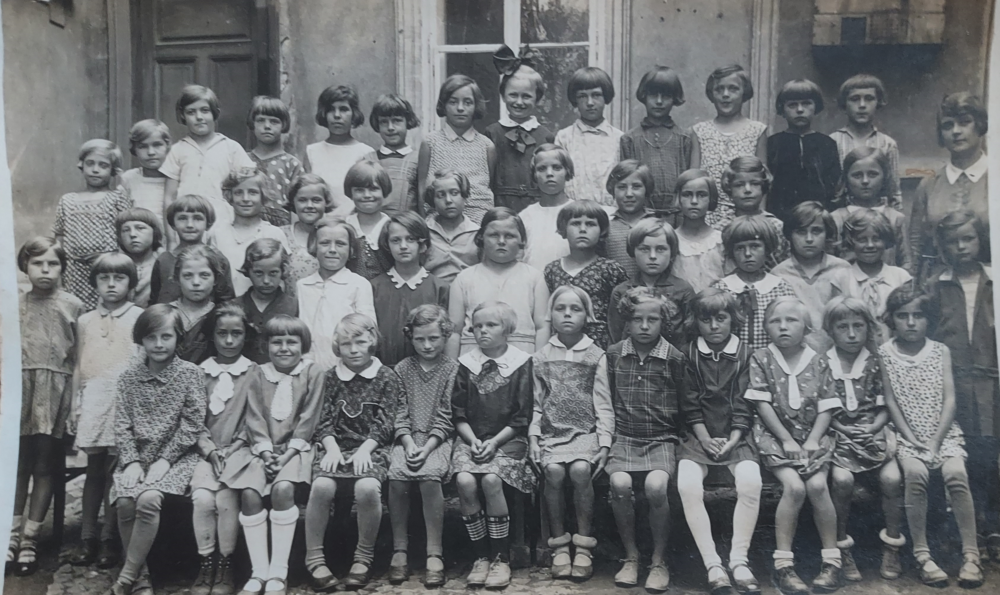
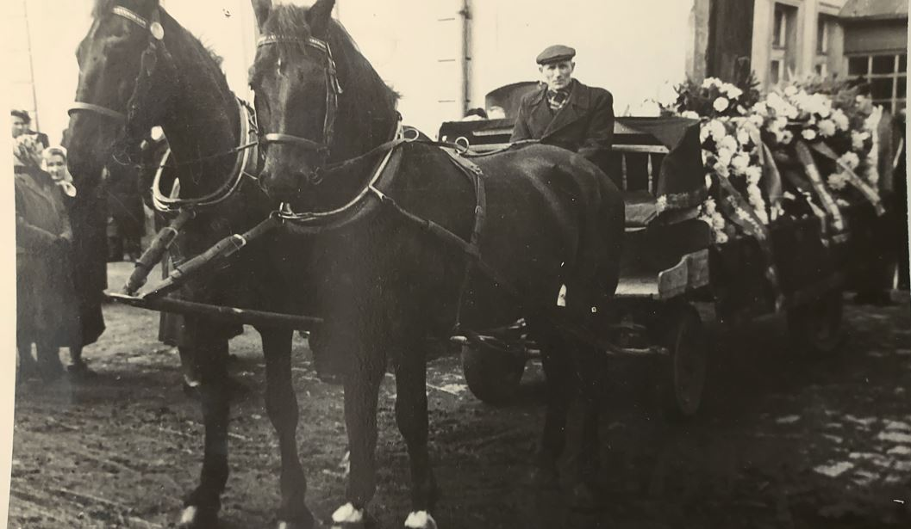
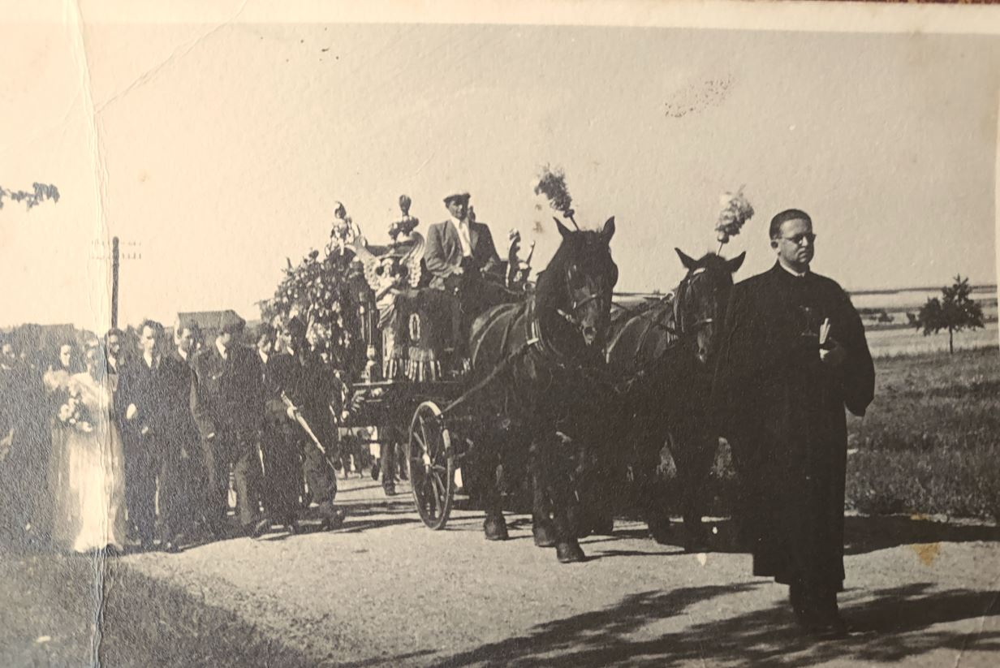
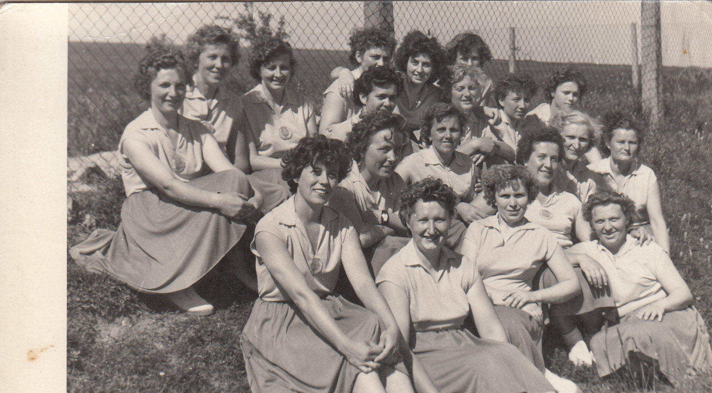
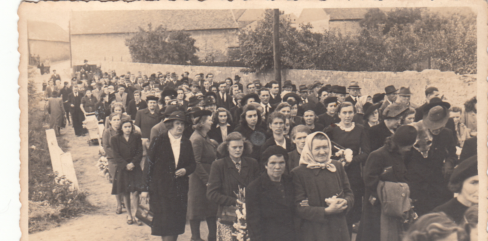

|  1 Děti z Přezletic bez datace. |
2 František a Miroslav Barták - bez datace |
 3 František Barták - bez datace |
 4 Kapela před Slunečními lázněmi Houšťka – uprostřed stojící František Tuček |
 5 Na fotografii je ve třetí řadě z kraje Anna Medřická a její dcera Milena Svobodová |
 6 ZŠ Vinoř 3 třída 1959-1960 – Třídní učitelka Telenská |
 7) Miroslav Barták březen 1957 |
 8) Taneční před hospodou – bez identifikace |
 9) ZŠ Vinoř – bez identifikace |
 10) ZŠ Vinoř 2 třída 1936 |
 11) ZŠ Vinoř 2 třída 1946-47 |
 12) ZŠ Vinoř školní rok 1965-1966 6 řada u dveří – Irena Vernerová, Marie Bieliková 5 řada u dveří - Blanka Drexlerová, 6 lavice u okna Jiří Pecka, 2 lavice u okna Vlastimil Svoboda |
 13) 16.6.1957. Předposlední Zdena Medřická, Před mí pí. Jandovská |
 14) 16.6. 1957. Druhá zleva Zdena Medřická, vedle, pí Fišerová |
 15) 16.6.1957 Ženy kráčí kolem hospody a konzumu – Zdena Medřická, pí Fišerová |
 16) Pohřeb bez datace – František Tuček |
 17) Pomník padlích bez datace vpravo Zdena Medřická |
 18) Neurčeno |
 19) Svatba bez datace |
 20) Bez datace – vlevo František Medřický |
 21) 16.6 1957 Zleva dole pí. Halíková, Zdena Medřická, pí.Kalinová, pí Fišerová další řada z prava pí. Fáberová, pí. Neubergerová, pí. Malá, pí Bímová. Horní řada druhá zleva pí. Jandovská a třetí z prava pí. Antošová |
 22) Bez datace |